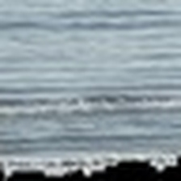
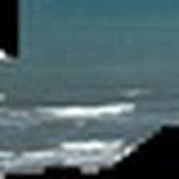
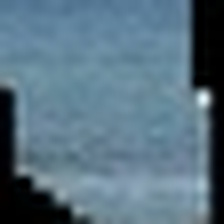
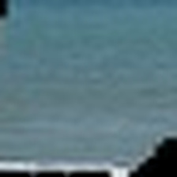
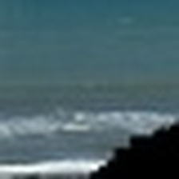

step-2_IMG_7274.jpg
Actual: 0.9000
Predicted: 0.4418
Absolute error: 0.4582
Mean-baseline absolute error: 0.5059
Beats baseline
Sorted by neural-network absolute error, worst first. Red cards are worse than the mean baseline. Visual explanations require manual inspection.

Actual: 0.9000
Predicted: 0.4418
Absolute error: 0.4582
Mean-baseline absolute error: 0.5059
Beats baseline

Actual: 0.5000
Predicted: 0.8272
Absolute error: 0.3272
Mean-baseline absolute error: 0.1059
Worse than baseline

Actual: 0.2000
Predicted: 0.5145
Absolute error: 0.3145
Mean-baseline absolute error: 0.1941
Worse than baseline

Actual: 0.7000
Predicted: 0.4930
Absolute error: 0.2070
Mean-baseline absolute error: 0.3059
Beats baseline

Actual: 0.0000
Predicted: 0.1777
Absolute error: 0.1777
Mean-baseline absolute error: 0.3941
Beats baseline

Actual: 0.0500
Predicted: 0.2084
Absolute error: 0.1584
Mean-baseline absolute error: 0.3441
Beats baseline

Actual: 0.8500
Predicted: 0.6993
Absolute error: 0.1507
Mean-baseline absolute error: 0.4559
Beats baseline
Actual: 0.7500
Predicted: 0.6063
Absolute error: 0.1437
Mean-baseline absolute error: 0.3559
Beats baseline

Actual: 0.2000
Predicted: 0.3073
Absolute error: 0.1073
Mean-baseline absolute error: 0.1941
Beats baseline

Actual: 0.7500
Predicted: 0.6594
Absolute error: 0.0906
Mean-baseline absolute error: 0.3559
Beats baseline

Actual: 0.4000
Predicted: 0.3247
Absolute error: 0.0753
Mean-baseline absolute error: 0.0059
Worse than baseline

Actual: 0.6000
Predicted: 0.5419
Absolute error: 0.0581
Mean-baseline absolute error: 0.2059
Beats baseline
Actual: 0.3000
Predicted: 0.3540
Absolute error: 0.0540
Mean-baseline absolute error: 0.0941
Beats baseline

Actual: 0.4000
Predicted: 0.3701
Absolute error: 0.0299
Mean-baseline absolute error: 0.0059
Worse than baseline

Actual: 0.4000
Predicted: 0.4172
Absolute error: 0.0172
Mean-baseline absolute error: 0.0059
Worse than baseline

Actual: 0.3000
Predicted: 0.2830
Absolute error: 0.0170
Mean-baseline absolute error: 0.0941
Beats baseline

Actual: 0.3000
Predicted: 0.3136
Absolute error: 0.0136
Mean-baseline absolute error: 0.0941
Beats baseline